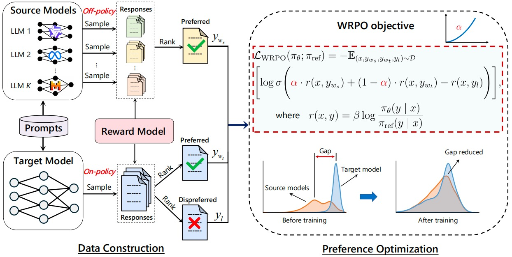
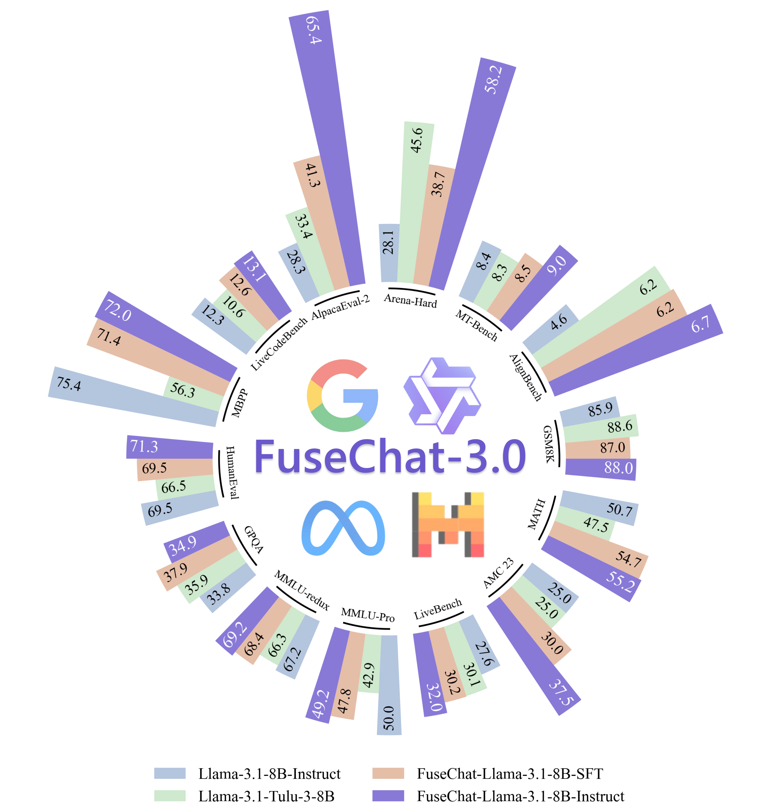
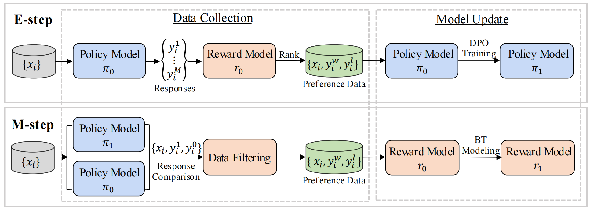
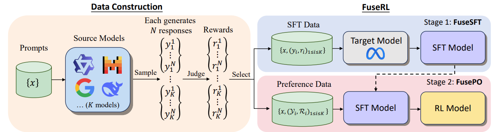
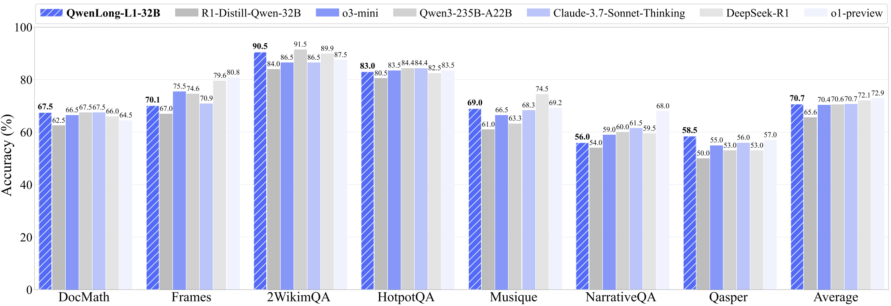
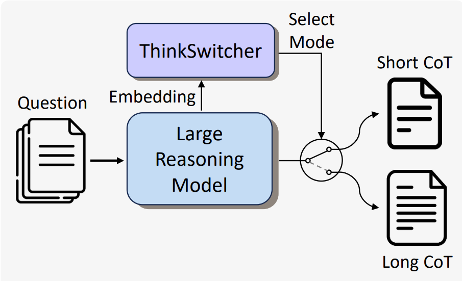
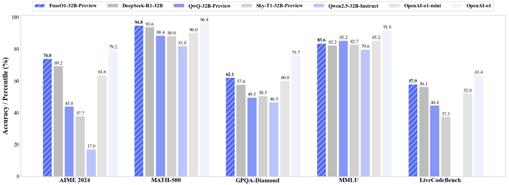

|
My name is Ziyi Yang. I am a second-year MS student (expected to graduate in 2026) at Sun Yat-sen University, advised by Prof. Xiaojun Quan. Before this, I received my Bachelor's degree (2019-2023, computer science and technology) from Sun Yat-sen University. I am currently an intern at Alibaba Tongyi (2025.05-now). Email / CV / Google Scholar / GitHub / HF |

|
|
My primary research interests lie at the intersection of several key areas in modern artificial intelligence. These include heterogeneous model fusion, with a focus on integrating diverse large language models (LLMs); advanced preference learning algorithms such as DPO and SimPO; the development of large reasoning models (LRMs) capable of adaptive thinking; and novel reinforcement learning (RL) methodologies, particularly in long-context and self-play scenarios. My representative publications are listed below. |
| Knowledge Fusion & Preference Learning | |
|  |
Ziyi Yang, Fanqi Wan, Longguang Zhong, Tianyuan Shi, Xiaojun Quan ICLR, 2025 [Paper] / [GitHub] / [HF] We propose an implicit fusion method, Weighted-Reward Preference Optimization (WRPO), which leverages preference optimization between the source LLMs and the target LLM to transfer their capabilities effectively. WRPO achieves a LC Win Rate of 55.9% against GPT-4-Preview-1106 on AlpacaEval-2 and a Win Rate of 46.2% against GPT-4-0314 on Arena-Hard. |
|  |
Ziyi Yang, Fanqi Wan, Longguang Zhong, Canbin Huang, Guosheng Liang, Xiaojun Quan SCI-FM @ ICLR, 2025 [Paper] / [HF] / [HF Daily Papers] / [r/LocalLLaMA] / [GitHub] / [魔搭社区] We introduce FuseChat-3.0, a suite of large language models (LLMs) developed by integrating the strengths of heterogeneous source LLMs into more compact target LLMs. Using Llama-3.1-8B-Instruct as the target model, our fusion approach achieves an average improvement of 6.8 points across 14 benchmarks. |
|  |
Tianyuan Shi, Canbin Huang, Fanqi Wa, Longguang Zhong, Ziyi Yang, Weizhou Shen, Xiaojun Quan, Ming Yan ACL Main , 2025 [Paper] We propose Mutual-Taught, a self-training method that iteratively improves both the policy model and reward model without requiring additional human annotation. Our approach mirrors the expectation-maximization (EM) algorithm. Experimental results demonstrate that this iterative approach leads to consistent improvements in both models. |
|  |
Longguang Zhong, Fanqi Wan, Ziyi Yang, Guosheng Liang, Tianyuan Shi, Xiaojun Quan Preprint, 2025 [Paper] We propose FuseRL, a novel two-stage framework comprising FuseSFT and FusePO to maximize the utilization of source LLMs. Using Llama-3.1-8B-Instruct as the target model, our approach achieves state-of-the-art performance among 8B LLMs on AlpacaEval-2 and Arena-Hard. |

|
Fanqi Wan, Longguang Zhong, Ziyi Yang, Ruijun Chen, Xiaojun Quan Tech Report, 2024 [Paper] / [GitHub] / [HF] / [机器之心] / [mergekit] We propose FuseChat, an extended framework of FuseLLM to integrate the collective knowledge and individual strengths of multiple structure- and scale-varied chat LLMs into a more powerful chat LLM. FuseChat-7B is comparable to the larger Mixtral-8x7B-Instruct and and approaches GPT-3.5-Turbo-1106 on MT-Bench. |
| Large Reasoning Models & Reinforcement Learning | |
|  |
Fanqi Wan, Weizhou Shen, Shengyi Liao, Yingcheng Shi, Chenliang Li, Ziyi Yang, Ji Zhang, Fei Huang, Jingren Zhou, Ming Yan Tech Report, 2025 [GitHub] / [HF] / [Paper] / [r/LocalLLaMA] / [HF Daily Papers] We propose QwenLong-L1, a framework that adapts short-context LRMs to long-context scenarios via progressive context scaling. QwenLong-L1-32B outperforms flagship LRMs like OpenAI-o3-mini and Qwen3-235B-A22B, achieving performance on par with Claude-3.7-Sonnet-Thinking |
|  |
Guosheng Liang, Longguang Zhong Ziyi Yang, Xiaojun Quan Tech Report, 2025 [Paper] we propose ThinkSwitcher, a framework that enables a single LRM to dynamically switch between short and long CoT modes based on task complexity. ThinkSwitcher reduces computational cost by 20–30% while maintaining high accuracy on complex tasks. |
|  |
Fanqi Wan, Longguang Zhong, Ziyi Yang, Weizhou Shen, Xinting Huang Tech Report, 2025 [GitHub] / [HF] / [Blog] / [r/LocalLLaMA] / [Mergekit] FuseO1-Preview is our initial endeavor to enhance the System-II reasoning capabilities of large language models (LLMs) through innovative model fusion techniques. The resulted FuseO1-DeepSeekR1-QwQ-SkyT1-32B-Preview achieves a Pass@1 accuracy of 74.0 on AIME24, demonstrating significant performance improvements compared to the OpenAI o1-preview (44.6) and OpenAI o1-mini (63.4), even approaching OpenAI o1 (79.2). |
|
Summer Intern at Tongyi lab, supervised by Dr. Weizhou Shen and Dr. Ming Yan. (2025.5-now). |
|
MS Student in Computer Technology, Sun Yat-sen University (2023.09-2026.06). Bachelor of Computer Science and Technology, Sun Yat-sen University (2019.09-2023.06). |
|
Website's code is from Jon Barron. |